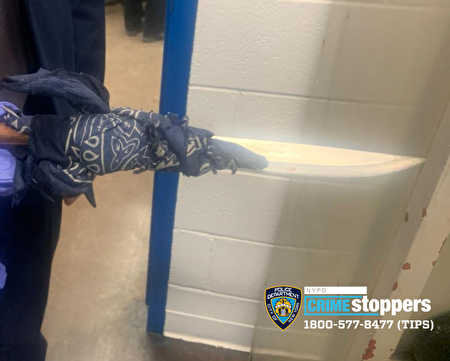

01｜
皇后区地铁刺死案嫌犯被捕
周三傍晚皇后区伍德海文大道站，25岁布朗克斯男子托马斯持厨刀刺死59岁乘客洛哈诺，后者为六个孩子的父亲。嫌犯被当场逮捕，已被控谋杀及持械罪，正接受精神评估。这是今年第6起地铁凶杀案。
来源｜哥伦比亚广播公司纽约台

观察｜
今年地铁凶杀案数量已超去年全年。对依赖地铁通勤的华人居民而言，这类无端冲突提醒乘客留意周围异常行为，及时远离。


周三傍晚皇后区伍德海文大道站，25岁布朗克斯男子托马斯持厨刀刺死59岁乘客洛哈诺，后者为六个孩子的父亲。嫌犯被当场逮捕，已被控谋杀及持械罪，正接受精神评估。这是今年第6起地铁凶杀案。
来源｜哥伦比亚广播公司纽约台

观察｜
今年地铁凶杀案数量已超去年全年。对依赖地铁通勤的华人居民而言，这类无端冲突提醒乘客留意周围异常行为，及时远离。
州长霍楚周三宣布，康奈尔大学已同意聘请外部律师对其处理2024年兄弟会轮奸指控的方式展开独立调查。汤普金斯县检方已重启刑事调查，联邦参议员舒默也呼吁彻查。
来源｜ABC7纽约台
观察｜
康奈尔是华人学生家庭高度关注的常春藤院校。独立调查结果将直接影响外界对该校校园安全处理机制的信任度。
马姆达尼周四宣布，布鲁克林格林波因特盒子街公园正式动工。4000万美元项目将原MTA用地改建为2.5英亩滨水公园，预计2028年夏末完工。
来源｜纽约市政府
观察｜
拖延二十余年的项目终于动工，下一观察点是市府能否按2028年夏末目标如期交付。
据amNY报道，州长霍楚正寻求免除对新购地铁车厢及巴士征收的关税，相关成本预计增加约10亿美元。
来源｜amNY
观察｜
若关税最终落地，采购成本上升可能间接影响票价或车队更新速度，依赖公交通勤的华人乘客应关注后续进展。

据纽约市政府官网，今年“不给糖就捣蛋无车街道”活动将覆盖全市160个无车街道及广场，为历年最大规模。
补充详情｜活动覆盖五大区，与市交通局Open Streets及公共广场项目结合推出，10月期间安排讨糖、游戏、现场表演及免费社区步行导览，居民可按所在社区查询具体日期和地点。
快评｜
有孩子的华人家庭可提前查看所在社区场次。
据纽约市旅游会展局，非百老汇周10月5日至18日举行，25部剧目提供二人同行一人价门票。
补充详情｜本季25部参演作品中有15部首次加入活动。优惠票须通过活动指定购票渠道购买，热门剧目及场次票量有限，售完即止。
快评｜
热门场次可能提前订满，应尽快确认。
据纽约市政府官网，周四隔日停车、垃圾回收及学校均正常运作。
补充详情｜官方日历显示今日无暂停安排。
快评｜
有车家庭按常规安排即可。
据amNY报道，布鲁克林Acme烟熏鱼工厂持续其家族经营传统，业务可追溯至1906年，目前已传承至第四代。
补充详情｜企业历史可追溯至1906年，1954年开始在格林波因特自行熏制鱼类，目前由第四代家族成员经营，业务已从纽约区域市场扩展至全美及国际市场。
快评｜
对关注本地传统产业的读者，这类老店延续本身即是城市制造业韧性的缩影。
据福克斯5台报道，72岁男子格里菲斯被捕，被控两项肇事逃逸罪，涉嫌与前尼克频道童星安德伍德1月16日身亡一案有关。
补充详情｜警方称安德伍德当晚先后被两辆车撞击，两名司机均逃离现场。目前警方尚未说明格里菲斯涉嫌驾驶哪辆车，第二名司机仍未被捕，案件调查继续。
快评｜
案件进入司法程序，后续起诉进展及第二名司机追查值得关注。
据ABC7纽约台报道，布鲁克林柏特格林区惠特曼住宅区凌晨发生枪击，一名62岁男子和一名21岁男子受伤。
补充详情｜枪击约凌晨1时发生，两名伤者均情况稳定。警方称枪手随后乘灰色本田轿车沿默特尔大道向北逃离，目前尚无人被捕。
快评｜
居住在公共住房社区的居民应留意警方后续通报的安全提示。

地铁凶杀案、康奈尔调查、NYCHA枪击——三条新闻表面各异，却都指向同一个问题：既有安全和问责机制是否真正发挥作用。
对企业和家庭而言，真正值得盯住的不是个案本身的细节，而是涉事机构后续公布的具体整改措施。
单一事件难以说明系统性趋势，但持续追踪官方回应，才能判断风险是否真正被正视。
评论
你今天最关注哪一条？